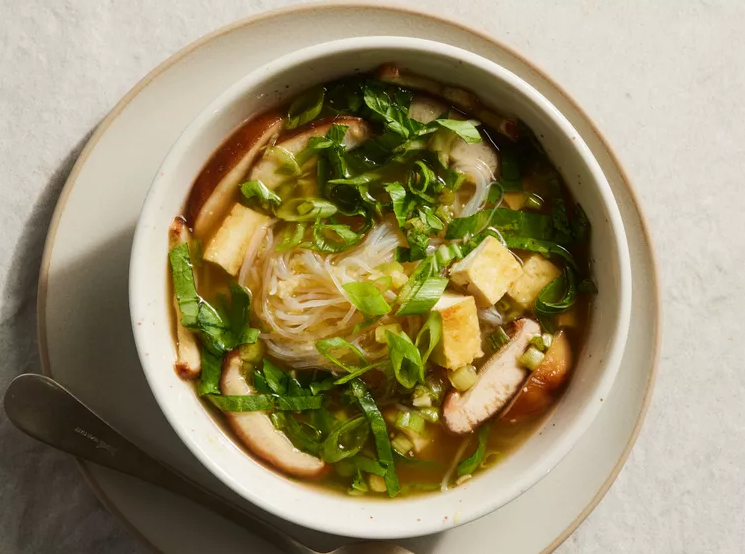

Miso Noodle Soup in a Jar

This recipe was inspired by recipes on TikTok for miso soup!
Prep Time: 20 mins
Cook Time: 10 mins
Servings: 3 people
INGREDIENTS
- 12 ounces extra-firm tofu
- 1 tablespoon vegetable oil
- 1/4 cup sliced green onions
- 3 tablespoons white miso paste
- 2 cloves garlic, minced
- 1 tablespoon vegetable stock base
- 1 tablespoon grated fresh ginger
- 1 1/2 cups cooked rice vermicelli noodles
- 1 cup thinly sliced shiitake mushrooms
- 1 cup thinly sliced baby bok choy
DIRECTIONS
- Cut tofu into 1/2-inch planks. Heat oil in a large skillet over medium-high heat. Cook tofu, turning halfway through, until golden, 6 to 8 minutes. Cut tofu into cubes.
- Stir together green onions, miso paste, garlic, stock base, and ginger in a small bowl. Divide evenly among 3 microwave-safe pint-size canning jars with lids.
- Layer evenly with rice vermicelli noodles, tofu, mushrooms, and bok choy. Chill, covered, up to 5 days. To serve, see “Heat and Eat”. Garnish with sliced green onions.
Home